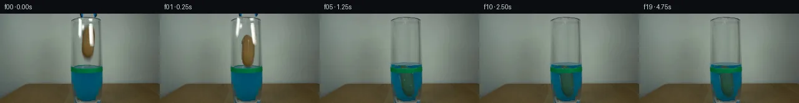

![首帧]()

Round 00
2026-11-05T15:59:17.151702+00:00像素候选变化代码 +406/−0inspection 更新
pixels b21270e9c6751c8f · code ca4f68798568f6b4
查看本轮 generate.py 真实 diff
--- previous/generate.py
+++ current/generate.py
@@ -0,0 +1,406 @@
+"""Local photograph-based pixel animation. No scene inputs besides the first frame/prompt."""
+from pathlib import Path
+import json
+import math
+import re
+import base64
+import numpy as np
+from PIL import Image, ImageDraw
+from scipy.ndimage import map_coordinates, gaussian_filter
+from artifact_io import save
+
+ROOT = Path(__file__).resolve().parent
+H, W = 144, 256
+Y, X = np.mgrid[:H, :W].astype(float)
+SOURCE = np.array(Image.open(ROOT / 'first_frame.png').convert('RGB'), dtype=np.uint8)
+SRC = SOURCE.astype(float)
+
+
+def smoothstep(a, b, x):
+ u = np.clip((x - a) / (b - a), 0, 1)
+ return u*u*(3-2*u)
+
+
+def box(x0, y0, x1, y1, soft=0.7):
+ return (smoothstep(x0-soft, x0+soft, X) *
+ (1-smoothstep(x1-soft, x1+soft, X)) *
+ smoothstep(y0-soft, y0+soft, Y) *
+ (1-smoothstep(y1-soft, y1+soft, Y)))
+
+
+# Measured elongated silhouette. All coordinates were determined numerically.
+PROFILE_Y = np.array([18,20,23,26,30,35,43,51,58,64,68,71,73,74.2])
+PROFILE_L = np.array([139,136,133.8,132,130.8,130.4,130.3,130.1,131.0,132.3,134.4,137.0,139.2,141.1])
+PROFILE_R = np.array([140,143,146.9,150.0,151.4,151.8,151.6,151.2,150.4,149.0,147.3,145.1,143.0,141.4])
+left = np.interp(Y, PROFILE_Y, PROFILE_L)
+right = np.interp(Y, PROFILE_Y, PROFILE_R)
+POTATO_A = smoothstep(-0.8, 1.0, np.minimum(X-left, right-X))
+POTATO_A *= smoothstep(17.7,19.5,Y) * (1-smoothstep(72.7,74.8,Y))
+
+# A stationary plate for occluded background. Adjacent glass pixels supply
+# row-dependent brightness; clear lower interior rows supply the cross-section.
+PLATE = SRC.copy()
+clean_profile = SRC[78:81].mean(axis=0)
+for y in range(7,81):
+ row_reference = 0.5 * (SRC[y,122:125].mean(axis=0) + SRC[y,153:156].mean(axis=0))
+ template_reference = 0.5 * (clean_profile[122:125].mean(axis=0) + clean_profile[153:156].mean(axis=0))
+ if y >= 16:
+ replacement = clean_profile + (row_reference-template_reference)
+ else:
+ # The clear top opening has a separate light level and front-rim dip.
+ weight = np.clip((np.arange(W)-123)/31, 0, 1)[:,None]
+ replacement = (1-weight)*SRC[y,122:125].mean(axis=0)+weight*SRC[y,153:156].mean(axis=0)
+ replacement += 4.0*np.sin(np.clip((np.arange(W)-123)/31,0,1)*np.pi)[:,None]
+ repair = np.zeros(W)
+ if y <= 43:
+ repair = np.maximum(repair, box(124.5,7.1,133.0,42.0)[y])
+ if y <= 55:
+ repair = np.maximum(repair, box(140.5,7.1,150.0,54.0)[y])
+ if 16 <= y <= 78:
+ repair = np.maximum(repair, box(129.8,16.0,152.0,77.0)[y])
+ PLATE[y] = SRC[y]*(1-repair[:,None])+replacement*repair[:,None]
+
+# Remove only the cropped blue-black stems, retaining the ellipse at row 6.
+STEM_MASKS = []
+for bounds, refs in [((127.0,-2,133.8,5.7),(124,137)), ((148.9,-2,155.2,5.7),(146,158))]:
+ mask = box(*bounds,soft=0.45)
+ for y in range(7):
+ w = np.clip((np.arange(W)-refs[0])/(refs[1]-refs[0]),0,1)[:,None]
+ replacement = SRC[y,refs[0]]*(1-w)+SRC[y,refs[1]]*w
+ PLATE[y] = PLATE[y]*(1-mask[y,:,None])+replacement*mask[y,:,None]
+ STEM_MASKS.append(mask)
+
+# Infer jaw coverage from a white-metal foreground over the repaired plate.
+# This de-matting prevents rectangular pieces of the background travelling
+# with the small photographed jaws.
+JAW_GEOMETRY = [box(124.5,7.0,134.6,42.4), box(140.7,7.0,150.1,54.0)]
+TOOL_LAYERS = []
+for geometry, stem in zip(JAW_GEOMETRY, STEM_MASKS):
+ fraction = np.clip((SRC[:,:,0]-PLATE[:,:,0]) / np.maximum(253-PLATE[:,:,0],40),0,1)
+ jaw = geometry*fraction
+ # Avoid including brown object texture in the metal extraction.
+ jaw *= 1-smoothstep(4,17,SRC[:,:,0]-SRC[:,:,1])
+ alpha = np.maximum(jaw,stem)
+ color = np.divide(SRC-PLATE*(1-alpha[:,:,None]),np.maximum(alpha[:,:,None],0.02))
+ color = np.clip(color,0,255)
+ TOOL_LAYERS.append((color*alpha[:,:,None],alpha))
+
… diff truncated; 319 more lines …